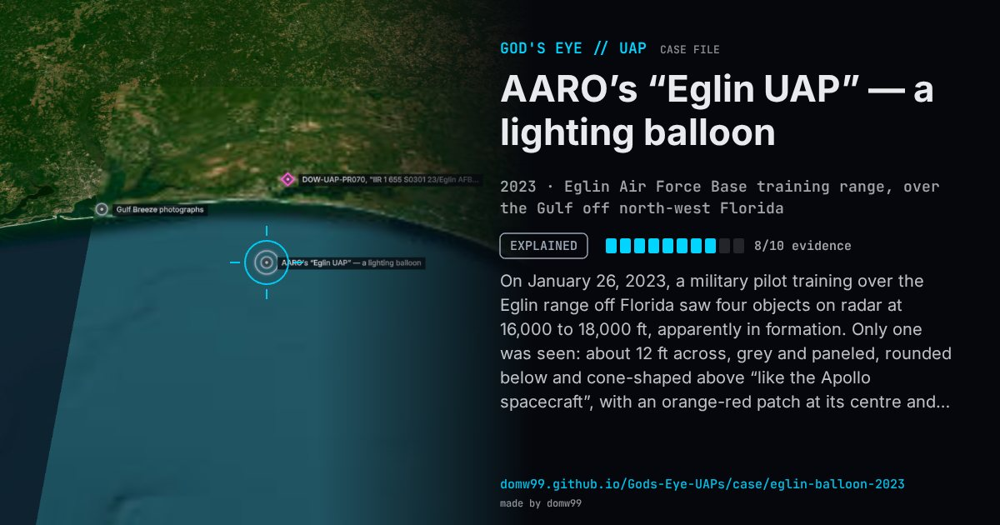

AARO’s “Eglin UAP” — a lighting balloon

On January 26, 2023, a military pilot training over the Eglin range off Florida saw four objects on radar at 16,000 to 18,000 ft, apparently in formation. Only one was seen: about 12 ft across, grey and paneled, rounded below and cone-shaped above “like the Apollo spacecraft”, with an orange-red patch at its centre and “blurry air” beneath; the pilot later thought a vertical engine was attached to its side. The aircraft’s video recorder was out of service, so the infrared and visual sensor took two still images. When the jet closed to within 4,000 ft its radar failed, and the object sank into the clouds. AARO found that the circuit breaker had tripped on the same aircraft three times before, that the images matched a commercial lighting balloon with black and white halves, which it tested, and that the object moved with the wind at that height. It closed the case in October 2023 as very likely a balloon.
Explanation
AARO assessed with moderate confidence that it was a lighter-than-air object, such as a large commercial lighting balloon, a weather balloon or a large Mylar balloon, drifting with the wind; its intelligence and science-and-technology partners independently reached the same conclusion with high confidence. The radar failure was a circuit breaker that had tripped three times before.
What was seen
Shape: About 12 ft across: a rounded grey lower half and a cone on top, like an Apollo capsule
Witnesses: A military pilot
Duration: Minutes
Sources
- AARO case resolution, “Eglin UAP” (copy at The Black Vault)
- The War Zone — Eglin AFB pilot likely saw a lighting balloon, not a UFO, Pentagon concludes (2024)
- The Debrief — AARO has only moderate confidence in its latest findings (2024)
Browse
- United States
- 2020s
- Explained
- Military encounters
- Official government documents
- Pilot and aircrew witnesses
- Photographs
- Radar tracking
- Infrared or other sensor data
- Cylinders and cigar shapes